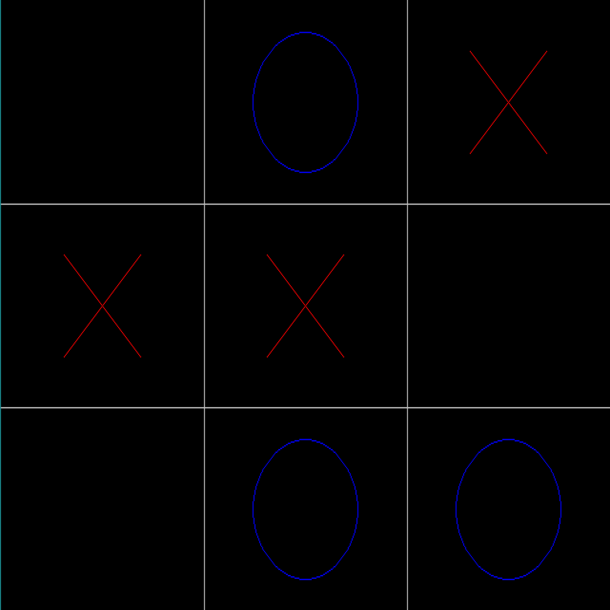

Tic Tac Toe
Tic Tac Toe created in C++. Used the SDL2 library to create a GUI to play.
The most difficult part about this project was creating the circles because C++ nor the SDL2 library have a native function for creating circles, especially hollow ones. I opted to use the Bresenham Circle algorithm, derived from the Midpoint circle algorithm. 8 points are initially drawn, and each iteration draws 8 additional points in a shifted position, resulting in a circle.
Technologies Used
- C++
- SDL2 (Simple DirectMedia Layer)
- Visual Studio